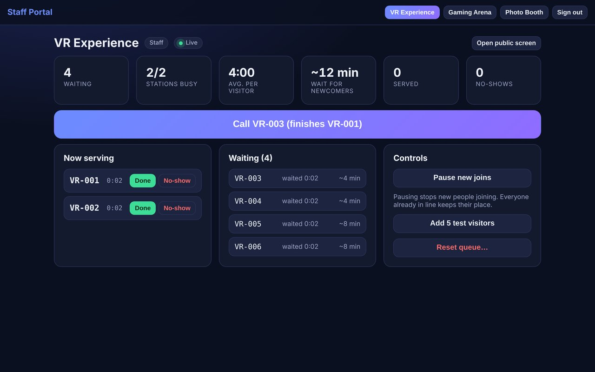
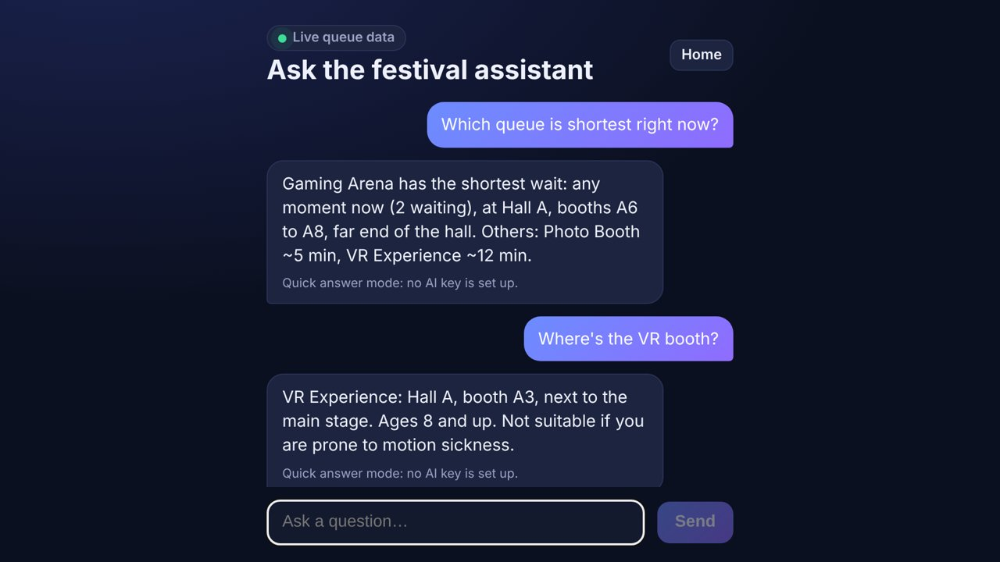

Featured Projects
Click a screenshot to open the live app. For the video projects, hover over the thumbnail for a preview or click to watch on YouTube.

Queuely: Real-time Event Queue System
2026A virtual queue for event booths such as VR, gaming and photo booths. Visitors scan a QR code to join on their phone and see their place in line and estimated wait update live. Staff run every booth from one PIN-protected portal, and a public "Now serving" screen shows who is up next.
- Wait estimates learn from real service times (moving average) and handle booths with several stations.
- Optimistic concurrency keeps simultaneous joins safe: no ticket number is ever handed out twice, checked by a test with 40 joins at once.
- Supabase Realtime pushes every change to phones, staff tablets and screens instantly, with generated Postgres columns for readable counts.
- Unit tests (Vitest), browser tests (Playwright) and CI on GitHub Actions.
Try the Staff Portal with demo PIN 1234.

AI Event Assistant
2026A chatbot for event visitors, built into Queuely. Ask "Which queue is shortest?", "Where's the VR booth?" or "What's on at 3pm?" and it answers from live queue data and the event schedule.
- Uses Gemini (free tier) with tool calling to read live queues and the schedule, so it never makes up wait times.
- Falls back across several models, and to rule-based quick answers when there is no key, the quota runs out or the AI is down, so the chat never shows an error.
- Rate limiting and input checks protect the free quota and stop fake system messages.
- Staff edit the event info (places, programme, FAQ) from the portal, so it can be reused at any event without a redeploy.

Game Development Showcase
2023An interactive game project developed during Temasek Polytechnic studies featuring custom game mechanics, interactive physics, and immersive level design.
Watch Full Video
Mobile Application Development
2021A mobile application engineered for seamless user experience, incorporating modern mobile UI/UX principles, database management, and functional features.
Watch Full Video